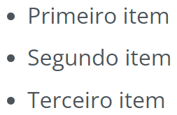

_como utilizar o fórum Guia de uso do fórum
Aqui, você encontrará todas as informações necessárias para usar o fórum de forma eficiente e ter a melhor experiência possível. Confere aí e descubra tudo que o fórum tem a oferecer!
Apresentação do fórum
O que é o fórum e qual é o objetivo dele?
O fórum da Start é um espaço dentro da plataforma onde nossa comunidade de estudantes pode interagir entre si, com os professores, professoras e com a equipe da Start. Nele, você pode compartilhar dúvidas, sugestões, aprendizados, projetos, reflexões e feedbacks, mas o objetivo principal dele é ajudar estudantes e docentes com dúvidas sobre os conteúdos das unidades.
Interface do fórum
Cada unidade tem uma área separada no fórum. Na parte de cima da página, está o nome da unidade em que você está. Abaixo, você encontra o botão “Criar novo tópico”, os filtros "Todos", "Sem resposta" e "Solucionados" e todas as interações (dúvidas, sugestões, feedbacks, etc.) que já foram feitas na unidade. Cada interação é chamada de “tópico”. Na imagem a seguir, temos um exemplo dessa estrutura, e presente nela 3 tópicos.
Clique para aplicar zoomSe você clicar no título do tópico, uma página se abrirá, e você verá ele por completo. Na parte superior do tópico, estão o título, e geralmente a unidade, aula e atividade em que o tópico foi feito. Na parte de baixo, estão o nome de quem criou/iniciou o tópico e a descrição fornecida. Ainda mais abaixo, estão as respostas feitas ao tópico principal, como você pode ver na imagem a seguir.
Clique para aplicar zoom
Como acessar o fórum
Para acessar o fórum, você deve estar em uma atividade e descer até o final da tela. Lá, você encontrará os botões “Discutir no fórum” e “Fórum da unidade”. Os dois levam ao fórum, mas de formas diferentes:
Clique para aplicar zoom
Botão "Discutir no fórum"
É a forma mais recomendada para acessar o fórum. Acessando por meio deste botão, quando você posta um tópico, ele aparece no fórum indicando a unidade, aula e atividade de onde ele foi criado, como indicado a seguir.
Clique para aplicar zoom
Botão "Fórum da unidade"
Postando um tópico no fórum por este botão, ele aparece no fórum com menos detalhes, mostrando somente a unidade de onde foi criado:
Clique para aplicar zoomPara ajudar quem for responder o seu tópico, é sempre melhor que você crie tópicos usando a opção “Discutir no fórum”, pois essa opção fornece mais detalhes do contexto do tópico. Busque usar a outra opção apenas quando quiser explorar o fórum geral da unidade.
Como interagir no fórum
Para criar um novo tópico, primeiramente, você deve acessar o fórum. Caso acesse pelo botão
“Fórum da unidade”, é preciso clicar em “Criar novo tópico”, que fica no canto
superior direito da tela. Se usar o botão “Discutir no fórum”, você deve descer a
tela do fórum até o final para iniciar um novo tópico.
Ao fazer isso, você verá a seguinte tela, com alguns campos a serem preenchidos:

Para descrever o seu tópico da melhor forma, você deve se atentar em alguns pontos.
Como escrever um tópico da melhor forma
Primeiramente, não forneça dados pessoais (endereços, telefones, senhas, etc.) nos
seus tópicos. Nenhuma dessas informações é necessária para você ter uma
resposta.
1. Título: Descreva o seu tópico de forma breve, porém, buscando ser o mais
específico possível. Além disso, abaixo do título existem alguns botões (Sugestão,
Reclamação, Projeto, Dúvida e Bug), é muito importante que você clique no botão que
classificar melhor o seu tópico, isso adiciona um texto no início do título que ajuda quem
for responder a identificar do que o tópico se trata:

2. Desenvolvimento: Inclua todos os detalhes necessários. Para um pedido de
ajuda, descreva o contexto do problema, quais testes você fez, e o que obteve de
resultados. Para uma sugestão, explique qual situação te levou à sugestão e por
que acredita que sua solução pode funcionar.
Além disso, é muito interessante que você utilize capturas de tela, links, códigos,
repositórios, projetos, etc. Isso ajuda muito quem vai te responder, agilizando
o processo da construção de resposta, e tornando o conteúdo dela mais preciso. No nosso
fórum, existe uma forma correta de utilizar cada um desses recursos.
Ferramentas para a construção de um tópico
Na tela de desenvolvimento do seu tópico, há uma lista com diversos ícones na parte superior, são ferramentas da linguagem MarkDown disponíveis para a construção do seu tópico. Resumidamente, as ferramentas funcionam da seguinte forma:
| Símbolo | O que faz | Código para utilização | Resultado final |
| Cria um título | # Título | ||
| Deixa o texto em negrito | Negrito | ||
| Deixa o texto em itálico | Itálico | ||
 |
Cria uma lista ordenada |
1. Primeiro item 2. Segundo item 3. Terceiro item … |
|
| Cria uma lista não ordenada |
* Primeiro item * Segundo item * Terceiro item … |
 | |
 |
Cria uma tabela |
| Coluna 1 | Coluna 2 | |
 |
 |
Formata um texto como código |
``` código ``` |
 |
| Insere um link em um texto | [Texto exibido](www.link.com) |  |
|
 |
Insere uma imagem por meio da URL/link |  |  |
 |
Insere uma imagem salva no dispositivo | Você deve clicar no ícone, selecionar a imagem e clicar em “Abrir”. | Com uma imagem compatível, ela é exibida, caso contrário, será o texto alternativo, como na opção anterior. |
| Desfaz | Você deve clicar no ícone. | Desfaz a última edição feita no tópico. | |
 |
Refaz | Você deve clicar no ícone. | Refaz a última edição desfeita no tópico. |
| Exibe pré-visualização | Você deve clicar no ícone | Mostra uma prévia do resultado do tópico. |
Com a pré-visualização ativada (última opção), o lado esquerdo mostra o código em MarkDown e o lado direito mostra o resultado do código. Tendo seu tópico construído, basta que você clique no botão de enviar, na parte inferior direita da tela, para postar seu tópico:
Clique para aplicar zoomApós enviar o seu tópico, você tem acesso às seguintes funções nele:
Clique para aplicar zoom
- Botões “Editar tópico” e “Editar”: Lhe permitem editar tanto o título
quanto o texto do seu tópico. Você pode editar somente os tópicos e respostas que você
criou.
- Botão “Acompanhar tópico”: Essa opção faz com que você receba um e-mail
quando alguém responder o tópico. O e-mail indica quem respondeu e tem um botão que te leva
para a resposta no fórum. Você pode marcar essa opção em qualquer tópico, mas ela é ativada
automaticamente nos seus tópicos.
As respostas para o seu tópico aparecem da seguinte forma no fórum:
No canto inferior direito fica o botão “Marcar como solução”. Você deve clicar nele caso a resposta seja útil para a sua questão, isso marca o tópico como solucionado e destaca a resposta que foi a solução. Outras pessoas podem marcar as suas respostas como solução também.
Como responder um tópico
No fórum da Start, qualquer pessoa pode interagir com qualquer tópico que faça parte da sua rede de acesso. Para responder, você deve acessar o tópico, descer a tela até o campo onde você pode escrever sua resposta e, para postar a resposta, basta clicar no botão “Responder”, no canto inferior direito.
Clique para aplicar zoomComo acompanhar minhas interações no fórum
Primeiro, você deve acessar o seu perfil da Alura. Você pode fazer isso abrindo o menu no
canto superior direito da tela e clicando na opção “PERFIL & CERTIFICADOS”.
Esse é o seu perfil da Alura. Na parte superior, você pode ver uma imagem sua (ou a inicial
do seu nome), seu nome e uma breve descrição sua (Biografia). Abaixo disso, estão algumas
informações como a quantidade de unidades e exercícios que você concluiu e, mais para a
esquerda, a quantidade de posts que você já interagiu no fórum.
Clicando nessa última opção, você acessa uma página com todos os tópicos que você já
participou de alguma forma, conforme mostrado nas imagens a seguir.

Nessa página, os tópicos são divididos em 3 categorias:
- Todos: Tópicos que você já interagiu ou acompanha.
- Sem resposta: Tópicos que você criou e estão sem resposta.
- Solucionados: Seus tópicos e respostas que foram marcados como solução.
Regras de interação no fórum
Nosso fórum possui algumas regras básicas de interação e, caso algum tópico e/ou resposta
não esteja de acordo com elas, ele é bloqueado e, dependendo da situação, nossa equipe pode
entrar em contato com a instituição de ensino do autor do tópico e/ou resposta para tomar as
medidas necessárias. Seu tópico não deve conter:
- Palavras de baixo calão: Palavrões, xingamentos, ofensas, referência a
atos sexuais, etc.
- Discriminação: Mensagens racistas, machistas, LGBTfóbicas, e que tenham
intenção de ofender e/ou discriminar qualquer pessoa, ou grupo.
- Conteúdo indevido: Conteúdos de cunho sexual, que faça referência a
crimes e/ou qualquer conteúdo inapropriado para menores.
- Conteúdo sem relação com a plataforma ou conteúdos: Qualquer assunto que
não esteja relacionado com o que é apresentado pela Start.
_FAQ Perguntas frequentes
Existem algumas perguntas no nosso fórum que são bem comuns, a seguir estão as questões que o pessoal mais pede ajuda e as respostas dadas no fórum.
-
Scratch Como compartilhar o link projeto do Scratch na plataforma
Para compartilhar o link do seu projeto do Scratch corretamente na nossa plataforma, você deve acessar a página de edição do seu projeto no Scratch (clicando em "Ver interior" do projeto que deseja compartilhar) e depois clicar em "Compartilhar", na barra superior da página.
Após isso, você pode copiar o link da barra de pesquisa ou clicar no botão "Copiar o Link" e copiar o primeiro link que aparecer. Agora, basta colar esse link na atividade da nossa plataforma que pede isso e clicar em "Enviar link". Você também pode ou não autorizar o uso do seu projeto. -
P5.js Como compartilhar o link do projeto do P5.js na plataforma
Se você fez um projeto no P5.js e deseja compartilhar na nossa plataforma, primeiro certifique-se de que fez o login na sua conta e depois acesse o seu projeto. Na página de edição do seu projeto, copie o link da barra de pesquisa (o link deve iniciar com "editor.p5js.org/").
Tendo copiado o link, basta colá-lo na atividade que pede o compartilhamento e clicar em "Enviar link". Você também pode ou não autorizar o uso do seu projeto. -
Finalizar unidade Como saber o que falta para concluir a unidade
Caso tenha ido até a última atividade de uma unidade e não obteve 100% de progresso, você pode acessar a página inicial da unidade, descer a tela até a seção "Aulas" e verificar o que está pendente na tabela.
A lista mostra o título de cada aula do lado esquerdo e as atividade concluídas o lado direito. Caso esteja indicado "4/5" do lado esquerdo da segunda aula, por exemplo, significa que você devia concluir 5 atividade, mas fez apenas 4.
Após verificar o que está pendente, você pode acessar a aula em questão clicando no título dela na tabela e finalizar a(s) atividade(s) que precisa. -
Certificado Como emitir o certificado de conclusão de unidade
Para obter o certificado de conclusão da unidade, primeiramente você precisa ter atingido 100% de progresso na unidade. Você pode verificar a porcentagem na página inicial da unidade e, caso tenha 100%, você pode clicar no botão "Outras opções" (ao lado do botão "Continuar unidade") e depois em "Certificado".
_exemplos Tópicos de exemplo
Para ter uma boa experiência com o fórum e obter as melhores respostas possíveis, a forma como os posts são escritos é muito importante. Por isso, vamos entender como é um tópico realmente bom e um tópico que pode ter melhorias.
Resposta
Referente à unidade Unidade XX
por JORGE | 23.9k xp | 12 posts
Qual é a resposta?
[Dúvida] Preciso de ajuda nesse exercício, tentei responder e não consegui
Referente à unidade Unidade XX, capítulo Aula XX e atividade Atividade XX
por JORGE | 23.9k xp | 12 posts
Eu respondi:
Bloco 01
Bloco 02
Bloco 03
Mas não deu
certo assim. Tem algo de errado nessa resposta?
Estou com uma dúvida na atividade
por LAURA | 10.6k xp | 8 posts
Preciso muito de ajuda nessa atividade. Podem me ajudar, por favor?
Estou com uma dúvida na atividade
Referente à unidade Unidade XX, capítulo Aula XX e atividade Atividade XX
por LAURA | 10.6k xp | 8 posts
Preciso muito de ajuda nessa atividade. Podem me ajudar, por favor?